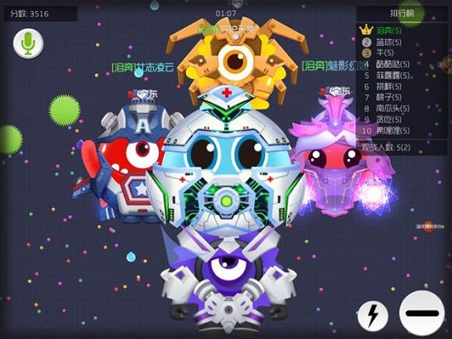
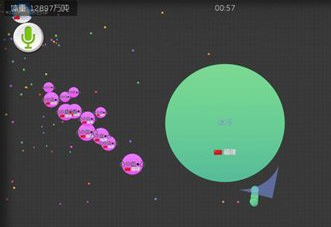
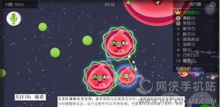
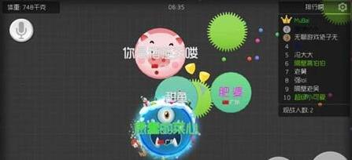
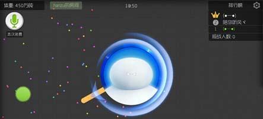
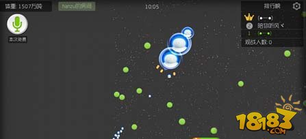

球 球 大 作 战
关于我们
交流群
 江西省宜春市宜春学院数计学院15计科106寝室版权所有
江西省宜春市宜春学院数计学院15计科106寝室版权所有
网络文化经营许可证 没有|信息网络传播视听节目许可证 没有
球球大作战
2015年，《球球大作战》横空出世！这是一款超好玩，超萌酷，超有挑战性，可与全球玩家实时对战的休闲游戏。在这个球球的世界里，每个人都化身为一颗独特的球球，大球吃小球，努力生存下来就是唯一目标。嘿，成为一个“球球巨无霸”是每个球球的梦想呢！
球球大作战团战团灭如何不掉段技巧分析，在团队作战的时候，如果你们的团队一不小心被全部灭了，然而这个时候，游戏所剩下的时间已经不多了，这个时候应该怎么办呢，下面就和小编一起来看看
1.告诉你一个球球不掉段的方法，打团被灭了马上跟好友个人进去，叫吐球保段，团队就不会掉段了。
2.需要注意的是，打团剩的时间不能超过加好友房间里面剩的时间。
球球大作战分身吃孢子引诱技巧分享，这是一款非常好玩的益智休闲游戏，全球玩家实时在线的玩法深受小伙伴们的喜爱，今天小编还是要继续跟大家说一说关于引诱敌人的一些小招数，希望对大家有所帮助哦。
攻略描述：就是两个玩个人的小伙伴 把两个人身上的狍子都吐藏在一个角落里然后另外一个小伙伴吃一点狍子 分身很多去附近引诱其他的大球 等大球追击你这个目标的时候你分身多跑的快 然后给他吃一点分身没关系 等到他快把你追到角落的是心想可以吃你了 这时候另外一个守株待兔的小伙伴就可以把藏好的狍子全部吃掉然后一口分身把那追击的大球给吃掉啦~
球球大作战调节摇杆交叉吐球其实很简单，就是调节摇杆的一种方法。最有效的方法就是先中吐，再把摇杆轻轻往你要吐球的方向慢慢移过去，这个过程中可以不停吐球，不需要等方向对准了再吐。
原理就是，让摇杆保持在中间的状态，而不是拉到最边。一开始可能不太习惯，不停地按这个方法练习后就能很快上手。像大神都不需要中吐一下，直接就能交叉，而且非常准确。以上就是关于吐球的具体方法介绍了，希望对大家有所帮助。
球球大作战被群体包围如何逃脱，玩家们在刚刚进入游戏的时候，不会存在很大的风险，但是到后期，球球都壮大到一定境界的时候，还是会有很多意想不到的情况的出现，接下来还是和小编一起来看看吧。
被一群人壁咚的时候怎么办?如果是在一个刺球旁边发现被数人夹击时，可以向刺球吐球，然后钻进去，暂时躲避。如果都是大球，可以一直往一条直线走，当遇到刺的时候，把刺吐向对方，还可以起到反杀效果哦!
球球大作战如何快速变大?变大有技巧吗?下面小编为你带来球球大作战16分身炸刺快速变大技巧!一起来看吧!
适用环境：单刷情况下需要迅速拉开体重差距时，比赛时间即将结束冲榜时。
攻略描述：在保证自己足够安全的情况下，如果没有队友配合，16分身炸刺是最快获得体重的单刷办法，因为当分身达到16个的时候，再此进行炸刺，不会再分裂出新分身，会直接给炸刺的分身增加体重，省去了被炸的四分五裂的困扰。除此之外我想不到单刷时还有比这个增加体重更快的方式了
图文讲解：
球球大作战到了后期变大后运动速度会越来越慢，非常影响发展也很危险，那么怎样加快运动速度呢?小编接下来就为大家详细解说球球大作战变大后加快运动速度的方法推荐，希望对大家有帮助。
1、在体积变大后，我们可以朝一个方向快速吐孢子，在减轻我们自身重量的时候就可以让移动速度慢慢提升。
2、你也可以选择分身，不仅可以有效扩大视野，同样也可以让你的移动速度变得更快。
球 球 大 作 战
 江西省宜春市宜春学院数计学院15计科106寝室版权所有
江西省宜春市宜春学院数计学院15计科106寝室版权所有
网络文化经营许可证 没有|信息网络传播视听节目许可证 没有